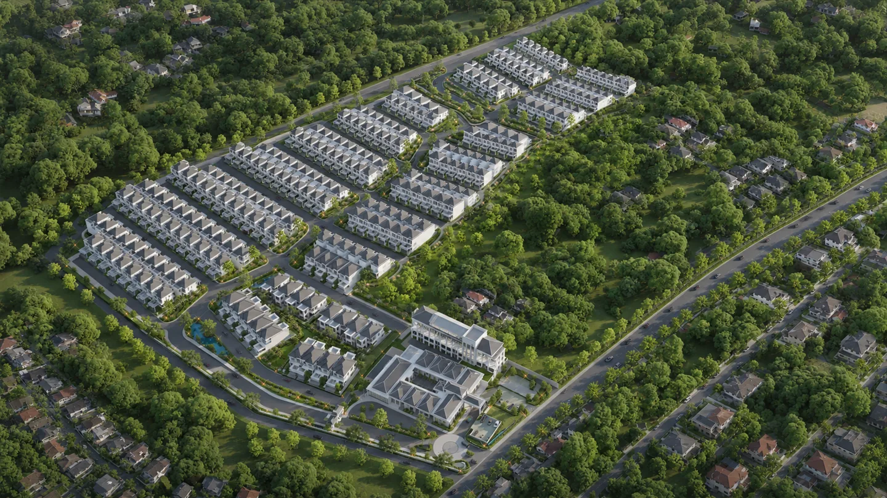
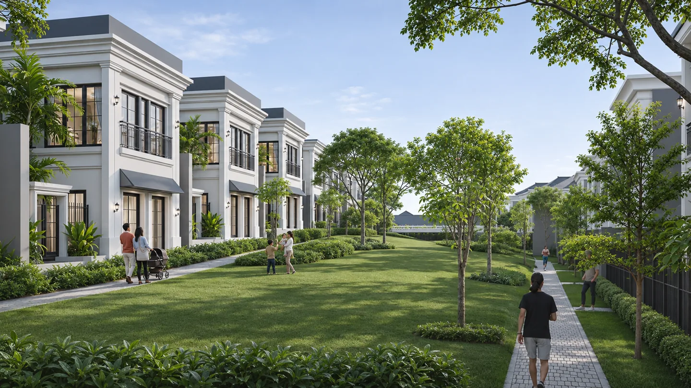

Ruang hijau dan jalur pejalan kaki
Sore di
jalur hijau.
Jalur pejalan kaki menyusuri ruang terbuka di antara deretan rumah. Lihat ilustrasi kawasan dari atas, lalu ikuti jalurnya dari dekat.


Ruang hijau dan jalur pejalan kaki
Jalur pejalan kaki menyusuri ruang terbuka di antara deretan rumah. Lihat ilustrasi kawasan dari atas, lalu ikuti jalurnya dari dekat.
